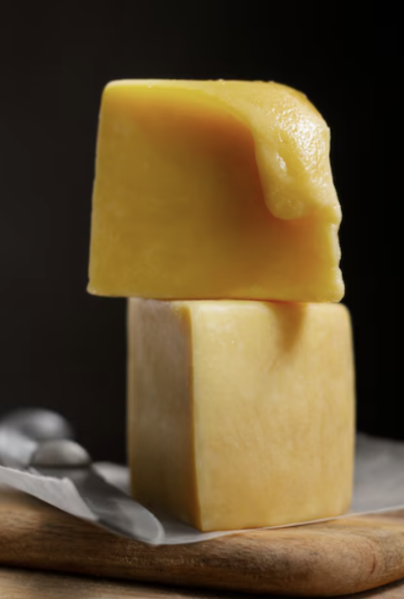
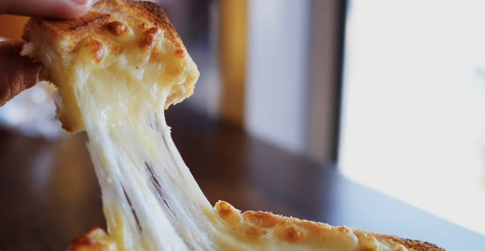
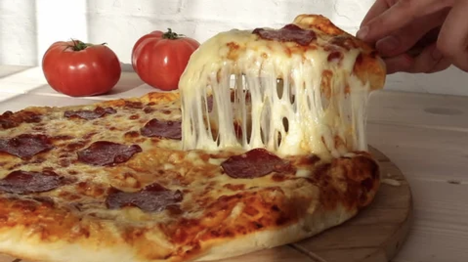
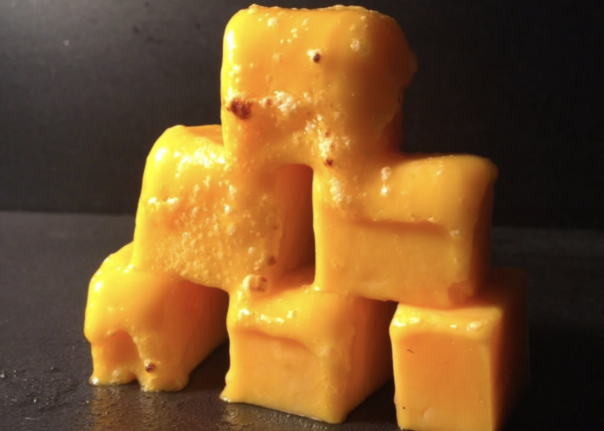

|  |
Team Members:
Heekyung Lee (3040759387), Jonah Tharakan (3036651401), Jaewon Hur (3039164221), Allison Dana (3038945561)
Summary:
The project is to render cheese and cheese-like materials accurately. The overarching goal is to generate satisfying “cheese pull” images. We would also like to render a simulation on how a block of cheese will change in the microwave as time passes.
The problem we are solving is creating a physically accurate and artistically pleasing simulation/animation of melted cheese. Melted cheese acts as an elastic body which is different from a mass-spring system but not quite a fluid. We will solve this problem by implementing a particle-based volume described in a paper mentioned below. This problem is important because it can be used in animations for entertainment, as well as physically accurate simulations for engineering or other purposes.
It is important to focus on the interaction between the cheese particles—physical interaction to show a realistic view of how cheese interacts with bodies around it. We will be focusing on the collision algorithms for the cheese with different types of primitives such as plates, forks, and more.
There are several challenges with simulating the cheese such as elasticity and variance on how fluid the cheese would be. For example, the edges of the cheese may become more brittle after a long time exposed to a heat source due to the oil in the cheese which acts as a frying/sticking component. This is different from the cheese in the center which will have the most elasticity due to the cheese particles surrounding it. When we simulate the cheese pull from the center, we may have to take into account this difference in elasticity.
The goal of our project is to create a system that can simulate images like these: (e.g., cheese pulls, melting blocks of cheese)
|

|

|

|
What we plan to deliver is a simulation of elastic fluids like melted cheese. That means we must get a particle simulator working that constrains the particles to act like a mix of a solid and a liquid. The cheese should be able to interact with solid objects. For example the actual bread part of a pizza slice can just be considered a movable solid.
We need to include settings like density and viscosity. Then, we need to tune these settings to get the material to act like real-life cheese, including “stringiness”, which is the most desired property of a good cheese pull. Finally, we will use shaders to get the textures and lighting working to actually render nice images of cheese on pizza and by itself.
Allow the “temperature” of the cheese to change over time, so we can see it actually melt and become more “loose”. Taking this idea even further, we could simulate the real-life effect where melted cheese crisps up if heat is continued to be applied, creating “cheese crisps”, where the edges are crispy but the center is still gooey.
May 5: Final Presentation
We will be extending the Homework 4 cloth simulator for this project, as it already contains the basic structure of a particle simulation. Our project will involve completely rewriting the physics of the particles to behave as a semi-liquid and updating the shading model to render the cheese surface realistically.